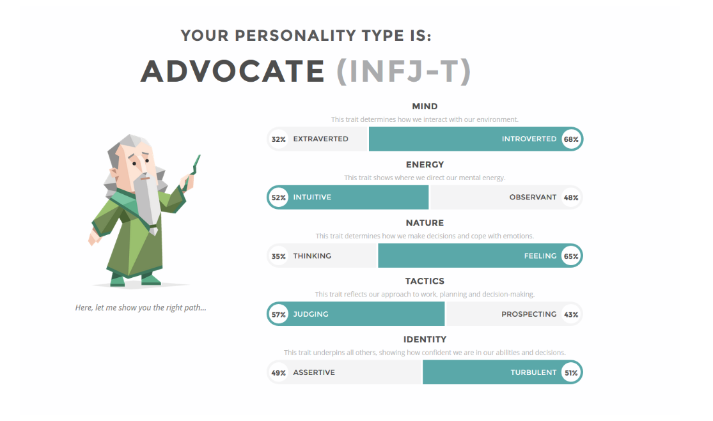
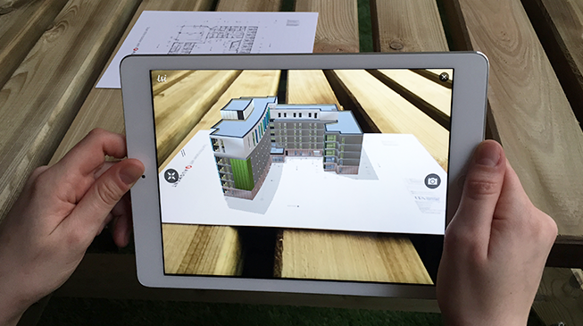

The homepage for the worlds worst hackers
built by Michael, Dylan, Riley & Hank
What is Team HACKERman?
In short, team HACKERman is our small little Introduction to I.T group that consists of the four members Michael, Riley, Hank & Dylan. For a small group, we are rather diverse in both ethnicities/culture and the circumstances that lead us to where we are today and the group that we have formed. The name origins of team HACKERman were basically from a bad joke internet meme that was universally understood by all members when the group was first formed. It was very clear from the beginning that we all had our differences but managed to become acquainted very quickly.
The Team
The List of Team Members are as follows:
Michael Theodorou - S3722979
Riley Wilson - S3659216
Eng Wen Shing/Dylan - S3699661
Zongming Liu /Hank -S3713771
To learn more about each of us individually, click buttons below
Team HACKERman is a group with very different kinds of people with careers varying vastly in the I.T to field to even not being I.T related. Programming, Human Resources, Cyber Security and Solution Architect are the ideal career paths that Team HACKERman seems to take a genuine interest in. But what is more interesting about Team HACKERman is the fact that each person has their own differen personalities that vary a lot.
Team member Michael
From the 3 test results, it shows a few things. I did find two of the quizes I did to be very counterintuitive whilst the 16 personalities I found to be the most interesting and agreeable. In-terms of team situations, I found that my personality (“The Advocate”) brings forward some interesting skills such as decisiveness, convincing/inspiration in work and its insightfulness. Even though one of my weaknesses outlined is getting burned out easily, I find that my work ethic is generally great and consistent so I highly doubt it will be a detriment to the group, however I do feel heavily tired after getting a lot of work off my shoulders. Although my personality type does state i’m an introvert at heart, Advocates tend to rise up to take leadership positions (in-which I was chosen as leader of team HACKERman). Overall, my personality “The Advocate” is a lot more focused around morality and idealism which isn’t necessary in team groups unless something like a conflict of interest arises between members. I do find my personality to be very agreeable even asking my friends what they thought to verify, saying that I have very strong right & wrong/good & evil views with morals and ethics.

Our Group Project
The project idea that everyone in team HACKERman discussed and came up upon together as a group is to develop a scan through and modification application towards room infrastructures.. This specific application would not only enable smartphones that are of high technology nowadays to only work as smartphones, but they would also be able to function as a 3D scanthrough device where it would be able to capture the infrastructure of a room. This specific application would also be in sync with computers and upon scanning of room, it would send its 3D model infrastructure straight towards a computer software that has been designed. From there onwards, the user would not only be able to see the model of the room, but to also be able to modify and design the infrastructure incase of any issues they would like to change. This particular application software would not only be extremely beneficial towards architecture students, but it would also be beneficial towards actual architectures and interior designers themselves. As technology and smartphone advances nowadays, this application would be able to make a thorough scan through the room and to be able to make the jobs of architects and interior designers much easier. This application would not only make the process of making a 3d model much easier, but it would also save a lot of time through the process.
As the world revolves more and more around the conveniency of its people, everyone would be allured and attracted towards items, software and devices that would bring them more convenience. With this application, it would not only bring them more convenience, but less budget would be spent on scanthrough infrastructure devices. As we, team HACKERman believes on innovation, we believe that daily items that we use nowadays could also be of different purpose other than it’s sole major purpose alone, therefore we’ve thought of this thoughtful yet simple idea of turning a singular purpose device into something that would be more beneficial to the society and industry. With this application software, users would also be able to make use of their old phones and to turn them into useful devices without discarding or buying new phones. How we team HACKERman came up of this idea was, we combined each of our single assessment project idea into a major project idea. We combined the concept of Eng Wen Shing’s mobile application, Riley Wilson’s website concept and Liu ZongMing’s architecture idea and thus, this major project idea was born. The only single concept that we’ve changed is to change the website idea to a software idea, due to the limitations on how much a browser could perform, we’ve decided to make do and to change it into a software. This would eliminate the limitations of a browser and to bring more value to it’s consumers.
Skills required
The skills that are required to develop this application software isn’t easy and it requires plenty of experience and expertise in each fields in order for this application software to be developed. In order for this application software to be developed, we would require programmers. The few skills that the programmers would have to have expertise in would be : HTML5, Java, Javacript, PHP, UI/UX Design, OOP ( Object Oriented Programming ), Java 8 , Spring IOC, Maven, Sprint Boot and SQL Queries. The programmers would have to be fluent in the front-end and the back-end of programming. Due to the complexity of this project, it would take a long time if it were to be developed by a single programmer itself, therefore it is much recommended if more programmers were to do it together. These skills are much needed in order for the software and the application to be developed. The hardware components that is required for this project idea would be the phone itself. Smartphones nowadays are able to detect plenty of objects in a simple picture, therefore we would have to program the focus into capturing the room itself when the application is working. Through reprogramming the focus, the camera would be be able to detect the size of the room and the model of the room. Upon capturing, a 3D model would be developed and to be sent to the computer software.

Conclusion
We believe that this application software would bring plenty of benefits and ease to the architecturing and interior designing industries. With this application software, companies would not only be utilising personal devices that they have, but they would also be able to save the world by not throwing away smartphones that are old, but being able to utilise them as a work device. Lastly, companies would also be able to save plenty of cost and to decrease their budget when it comes to scanning the infrastructure and making them into a 3D model as this application software would be able to perform it all.